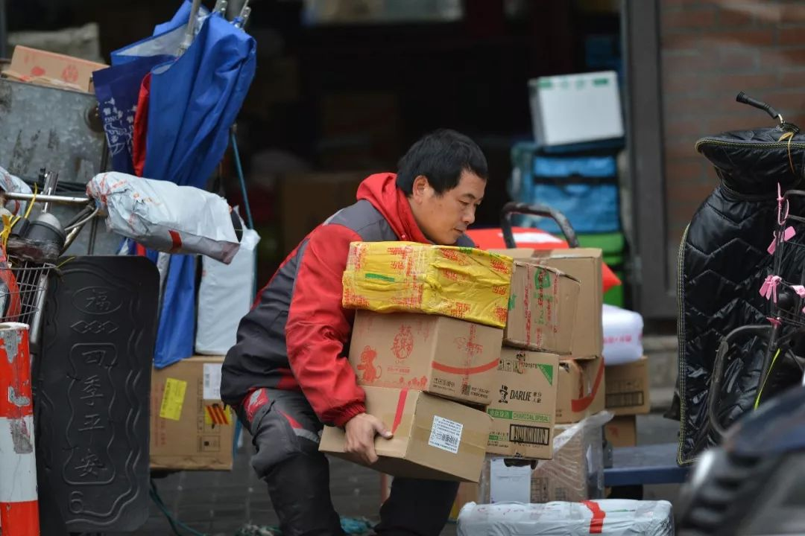
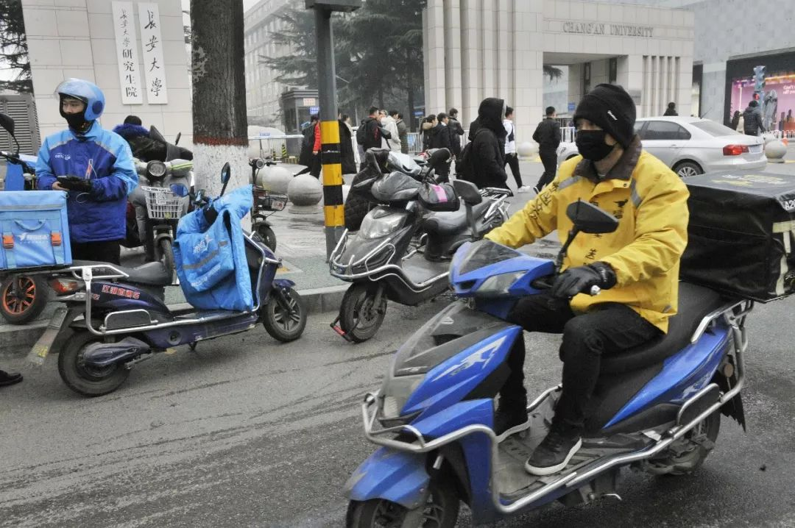
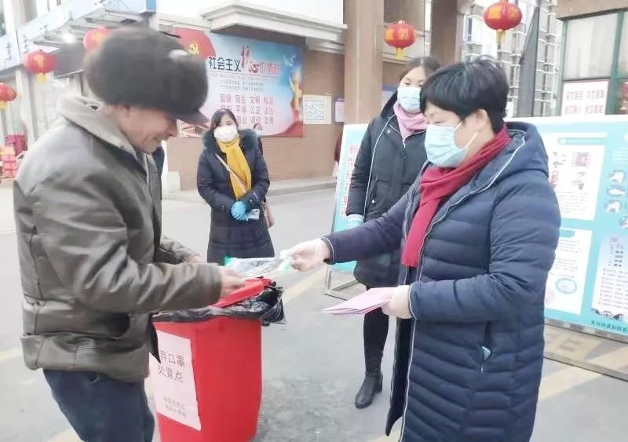
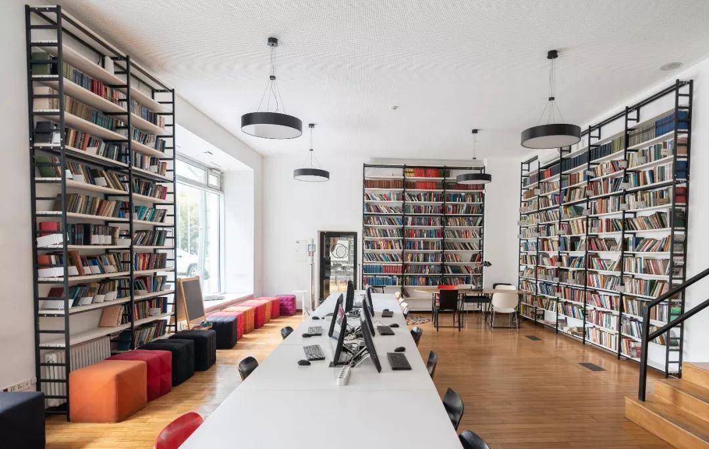

武汉：“打烊”的城市里，不打烊的外卖
原文链接 备份链接 突发的疫情搅乱了这个春节。武汉封城后，居民被迫留在家中、医护人员无法离开工作岗位，吃饭成了问题。与此同时，餐饮、休闲、商超便利等生活服务业也面临巨大考验。 作为居民和商家的连接点，一群隶属于本地生活服务平台的留守外卖 …


昨天是春节假期后返工第一天，但因为新冠肺炎的影响，注定了是一个不一样的开工日。每日人物询问了10个不同行业已经开工的人，他们正在做的工作，和我们的生活息息相关，记录他们的生活和烦恼，也是记录这次疫情所影响的不同侧面。
文 | 翟锦 龚菁琦
易方兴 李斐然
编辑 | 金匝
运营 | 肖睿
父母滞留疫区，谁来带娃？
朱迪 职场妈妈
我大概是我们那个湖北小城最后一波离开的人。
原本是提前请了年假，带着一岁半的孩子和公婆回湖北过年，那是1月19日，疫情还算平稳，人传人也未被证实。我当时的打算是，在小城过完年，带着爸妈来北京，和公婆交接——在北上广，和我相似状况的人很多，一个双职工家庭，都要工作，带娃的重担，都留给了各自的爸妈。
但随后的形势超乎了我的想象，只是在家待了短短三天，坏消息接踵而来，小城也有了确诊病例。因为担心孩子还小，小城的医疗资源也远不如北京，我连夜买了邻市的飞机票，天还没亮，就让爸妈送我和孩子去了机场。
那是一个大雾天，去机场的路都是隐隐绰绰，车开得极慢，我们几个人都很沉默，担心赶不上飞机。也不是没想过带爸妈一起来，但当时觉得，等在湖北过完年，爸妈再来也不迟。就在路上，我收到了还在北京的先生发来的信息：武汉封城。
当下我就觉得不妙了。虽然爸妈和公婆所在的小城离武汉有200多公里，但在那边务工的人数众多，春节回乡的流动是必然的，紧接着，怕是也要封。
果然，回北京第二天，还留在那里的爸妈就接到了火车站封站的消息，之后是高速、省道、村道都不通了，最后是小区也不让开车出入了。就这样，爸妈来北京帮我带娃的事彻底搁置了。
爸妈和公婆滞留湖北的13天，就是我和先生与孩子战斗的13天，除了精疲力竭，找不到合适形容词了。一岁半的孩子，需求太多，一日三餐，陪玩陪睡，她喜欢的11只猫开饼店的故事，大概一天能要求我讲上100遍。夜里还得哄，她精力旺盛，但因为从疫区回来，有必须被隔离的14天，没办法出门玩，无处发泄，每天在家简直要闹到拆房揭瓦。
还有无休止的工作，假期是不存在的，因为疫情的存在，反而比从前更忙碌，我只能趁孩子睡着后，赶紧打开电脑去处理一些事情。时间都被分割成碎片，全给了工作和孩子，完全没了自我的生活。
今天已经是开工第二天，在家办公，但2月10号就要得去公司上班了。我最担心的，是那时候怎么办？如果封城还没结束，爸妈来不了，要请保姆吗？可真请了，现在这样的状况，又怎么放心？我也看到了那个双职工家庭可以留一个人在家带孩子的消息，但实际操作起来，怕是困难重重。
人到中年，本就烦恼无数，又赶上这样的特殊时期，真叫人叹息。

▲图 / 视觉中国
找不到小店吃饭，我都吃4天泡面了
董盛 快递小哥
我老家是四川的，本来打算腊月二十八回去过年，然后初四再回北京，但家人说老家都隔离了十几个人，我就留在这里加班了。
现在送快递比以前简单，一是路上车少人少，比较好走，二是因为小区都封闭化管理了。我们一般把车停在门口，门卫也不敢收快递，只能打电话喊人下来取。就算偶尔送上了楼，对方一般也不开门，就让我放门口。
我们现在都是无接触式送货方式，跟人要保持两三米远，就把快递盒子放在地上，还得提醒一下对方要记得洗手。最近我遇到过各种奇怪的要求，有让我把快递放到小区里最高的那棵树下面的，还有让我放到草丛里的。有户人家门口放了个桶，桶上写了个纸条：“快递请丢到桶里面。”
至于我们自己，站点每天都会发口罩，也会喷洒酒精消毒。前几天酒精卖完了，我们只能买了56度二锅头灌到喷壶里面代替，所以要是有人收到的快递盒子上有一股白酒味，那估计就是我们送的。
现在对我们来说，最麻烦的就是找不到吃饭的地方。大餐厅吃不起，小餐厅90%以上都关门了。我记得我以前常去一家小店，店主就是湖北武汉的。以前我常吃他们家的热干面，15块钱一碗，吃得很饱。现在这家店迟迟没开门，估计店主回不来了，不知他们还好不好。找不到吃饭的地方，只能饿着肚子回来，在宿舍泡一碗泡面，我已经连吃4天泡面，快吃吐了。

▲图 / 视觉中国
现在收到的好评是从前的好几倍
章杰 外卖小哥
去年12月底，我刚给电动车换了个新的锂电池，充好电能跑一百多公里。没过多久，疫情就来了。
我在浙江这边送外卖，那天我一看，也已经700多例了，说实话，心里不慌是不可能的，我们戴的，就一个普通口罩，也没有别的防护措施，还要与各种店家打交道，尤其是昨天刚听说，深圳有个同行也得了这个肺炎，大家交流说，我们进封闭的餐厅取餐，要尽量屏住呼吸，或者在餐厅外面等，哪怕冷一点。
我媳妇就不让我送外卖了，但不送不可能，我们工资是这个月底发上个月的，如果你这个月不干了，就算你自退，五六千块钱工资就没了。我们老家买的房子还有房贷要还，孩子上学也要钱。而且只要旷工一天，就要罚款，前几天一个哥们罚了400块钱，两天就白干了。
现在大家买的东西，大部分都是超市生鲜，都是生活必需品。我就这样劝我老婆，如果我们不送，别人就得上街出去买，如果家里有小的，还得拖家带口一起出门。我们这一个外卖员一天平均要对接20个以上的家庭，如果我们不送，大家都跑出去，那交叉感染的风险更大，所以我们其实也在做好事。
现在送外卖的效率倒是高了不少。以前最怕的事情，就是喊半天顾客不出来，尤其是送写字楼的外卖。现在大家都在家，而且送到了，也是挂门把手上。有些同行回老家了，一时半会回不来，加上我们这几天订单单价也涨了，以前可能4块钱一单，现在最多能有8块钱，赚的钱确实是比以前多了。
就是太累了，每天我要送到晚上11点，一天的活儿才算完。也有暖心的时候，有一天晚上给人送了两瓶矿泉水，对方把十几块钱零钱都给我了，说是辛苦了，还有人送了我一个口罩，提醒我注意防护，我挺感动的。
最让我吃惊的是，在疫情爆发的时期，我的好评率变高了，一天能收到30多个好评，这是以前的好几倍。

▲图 / 视觉中国
禁红白喜事，村民闹了
王维阳 基层公务员
别人是初十上班，我们大年初二假期就结束了。在指挥中心，半个篮球场那么大的办公室，几十个人，每天不能脱口罩，一去就是用酒精和84消毒。公务员不能感染，自己防护不到位，谁会相信你。
这里有几千个从武汉回来的人，也有6起确诊病例。村干部天天拿喇叭去喊，不要出来走动，不要吃酒，不要打牌。对于那些偏远一点的人家，要一个个打电话。
农村最在意的是红白喜事，这也是干部们防护的难点，因为这些事，村民和村干部打架也是有的。有些做丧事的不能办酒，劝他们分餐制，每个人一个盘子。结婚的很多都推迟了，有一位人家不做酒，但一定要拜个堂，干部通融了一下，结果，马上有邻居打公示的举报电话。举报是经常有的，我也收过短信，一位老乡说看到一辆武汉牌车，请去查查。
基层对武汉回乡人的态度是，回来家里的，好好隔离，住在酒店的，劝说他们回家。每天村医要去重点对象家量体温，对于疑似病例，有专门的医生上门取样，送去市里做确诊。
每天接触来来往往的人，基层干部也不知道去哪买口罩，有些戴着黑口罩，有些戴防霾的，还有棉纱的，单层的，千奇百怪。一个市里N95才批下8个，有一个干部说，一个一次性口罩他戴了3天。
基层工作最怕的是，哪些事情没有想到，导致疫情难控制。我们有专门的督查组，营业场所该关闭的关闭，景区那块也得监督关了。但总有些意想不到的，有的洗脚城外面看不出来，但是你到里面去，还在营业，偷偷摸摸，后来我们查到一个武汉女子在这里上班，她是22号回来的。还有一个搞快递的，也是武汉来的，也送到宾馆了。
工作很细碎，辛苦，但是做这些是责无旁贷的。邻县有几个干部上报数据不及时，被停职，也有干部因接待过疑似病例被隔离。疫情之下，我们都是一个个普通人，都只有一个想法，给家乡带来安全的环境。

▲全国很多地区的公务员都提前结束了春节假期，投入基层防疫工作。图 / 宿迁日报社新浪微博
湖北的鸡蛋也没人要了
陈华 养殖场老总
我们公司养了100多万只鸡，一只鸡每天吃二两，就是百余吨饲料。湖北封路之后，鸡饲料进不来，不够吃，眼看着鸡不下蛋了。最着急的时候，我们跑到饲料厂门口堵，但外地员工都走了，没人生产，也没用。
好在我在公众号发出求救后，后台留言的很多，有十几个媒体打来电话，反映上去，第二天县里就让饲料原料进来了，但其实，真正的问题才开始。
原料拉来要加工，国家规定开工延迟。后面我们去呼吁，在保证安全的情况下进行，终于同意复工。但人手不够啊，没人敢来上班，包装厂也没人，这些事到现在也没解决好。
鸡蛋出来后，因为湖北疫情最严重，外地不要湖北的鸡蛋，司机也不愿意送，送到路上就会被人挡着，回不来，还要隔离。现在鸡蛋少量的还在走，剩下的压在家里，也只能压个半个月。
最麻烦的是处理肉鸡。本来养了60天应该出售，是最好的时机。你养100天，它吃的从二两涨到十两，光吃不长肉，后面的价值越来越小，有可能还卖不出去。而且现在也没地方养，准备养1000只的地方，等它长得越大，可能只能塞下500只了。
湖南的这次禽流感对我们是雪上加霜。我的小鸡苗，应该送到客户那去，禽流感一来，不能流动。养着鸡苗需要设备、加温，之前没作长期准备，卖不了，我只有埋掉。埋掉的损失反而是最小的。确实是无奈，对吧，心情都不好。
今年是因为人的疫情，附带的把养殖的麻烦更突出了。对养鸡人的影响是，可能人家明年不养了，我们也担心，到时候鸡蛋和鸡肉会特别贵。

▲因为疫情公路封闭，饲料运不进来，河南省漯河市一个养殖场总经理只得将上万只雏鸡掩埋。图 / 网络
整形手术少了，但咨询的人多了
彭如意 互联网医疗美容
我们公司已经做了一年半，是互联网整形方向，和医生合作，相当于做整形医生的经纪公司。
整形还是以年轻人为主，特别是大学生和白领，所以我们行业的两个高峰期，就是寒暑假和五一、十一假期。往年现在这个时候，应该是排满了预约手术单，除夕夜也不例外，现在因为疫情的影响，合作的医生都推迟了手术，到2月10号之后，而且时间都还不能确定。但同时，找我们来咨询的人更多了一些，我想是因为大家无法出门，相对比较空闲，有时间做功课。
幸好，我们是一家非常小的创业公司，只有6个全职员工，又依托于互联网，在家办公没有问题，只是效率会稍微低一点。我们从昨天就开始工作了，到2月10号之前都是线上办公，也不要求大家回北京。
但现在招人还有融资，进度都很滞后。我们从年前就开始准备BP（商业计划书），找有意向的投资人，准备年后就约他们详谈，但现在，只能线上聊，双方都建议说，等到疫情稳定之后再见面。
至于公司能不能真的在2月10号开工，我其实是担心的，这个时间我觉得有点早，毕竟北京这种超级大城市，在人员回流之后，疫情能不能控制，还是一件很考验的事情。
可能需要很久，大家才会再出门消费
许晔 餐饮行业
半年前我开始做餐饮的新创业项目，开了3家店，在南昌做广式养生汤馆，一家店有300平的面积，我们花了很多时间经营口碑和产品，本来准备年后继续开新店，拓展市场，但疫情爆发了，对我们这种刚创业的项目打击很大。
1月22号，农历二十八，我们店就关门了，餐饮业依照政府规定，是必须停业的。毕竟人传人有潜伏期，开店是没办法控制这些问题的。我的3家店，开销大头主要是房租和人工，因为我们得照常发工资，想保持人员稳定，一个月我们就得亏损18万。春节前后是餐饮业的旺季，如果正常营业，3家店能盈利三四十万，所以一进一出，得亏50多万。我们还是刚创业，像西贝那种大型连锁餐饮业，一个月就得亏上千万。
我们一个门店20多个员工，总共六七十人，员工都包住宿，不过我们年前就让员工都放假回家，没有留在宿舍，本来是准备初三回来上班，现在大家都在家休息，也不让回宿舍，不然管理成本更高。我有个朋友的员工住在宿舍，不仅得发口罩消毒液，安排人值班，还要发奖金安抚，让他们别出门。
我们也考虑过送外卖，好处当然会有，比如制造些品牌记忆，人员有事做比较稳定，但弊端更大，因为工作人员都聚集在一起，万一有一个人感染了，就很麻烦，毕竟做采购或是外送，都不得不暴露在外面。所以我们作为企业主，为员工考虑，还是得慎重。而且外卖的量如果不大，也没法覆盖人力成本，是救不了一家餐厅的。
这几年实体行业的流动和储备资金都不多，大家都在熬，我也本来期待2020年或是2021年会回暖，但这次疫情，对很多实体行业都有致命打击，大家都做的是现金流生意，那就不能断现金。而且可能有的一年到头赚不到什么钱，只能靠春节，但这次疫情就爆发在春节，我们餐饮业的黄金阶段，我们很多都是挣一两个月的钱，跟供应商结算一次，那如果谁倒闭了，就会影响很多人。
但我还是很乐观，这次疫情让餐饮业停滞，对大家都是一样的，那之后就统一回到起跑线。还是得思考积极些。而且相比于中大型餐饮企业，我们受影响程度相对小，半年不开店也能承受。本来我年后已经拿了3个店，准备拓展新店，但现在也只能先搁置。
如果疫情得到有效控制，门店可以2月开店，但我估计得有半年影响，大家可能才会慢慢和之前一样出来消费。在疫情爆发之前，我就在考虑做一些快销的养生汤产品，可以让大家带回家做的，我们传统行业还是得变化，如果门店不能经营，那得考虑其它造血方式。
现在大家都在哭可怜，有一些悲观发言，我不喜欢这样，我更觉得这是一个储备力量的时期。就像有创业者说希望房东这个月不收房租，我就不同意，房东也是在做投资生意，也承担了很多风险，这个要求不合道理，不能道德绑架嘛。大家还是应该想着自救，把企业做好，不是把困难转嫁给第三者。

▲按照政府规定，餐饮业是必须停业的。图 / 网络
我们被困住，只能先保命，活下来
万国英 青苑书店老板
我们书店是1992年开的，到现在已经28年了。几天前，我给一个微信号文章取标题，“请不要让我冻毙于风雪”，我这绝不是夸张，这次疫情是我们书店28年来遭遇的最大一次危机。
大年三十那天我们书店就关门了，往常是大年初二开门，但现在书店都没办法营业，线上经营也很难，员工没法上班，仓库也没人，物流不是停运就是特别贵。
青苑员工人数51人，青苑门店两个，一个312平方米，另外一个806平米，还有2000多平米的配送物流仓库，为江西省内200多家客户配送图书和提供专业服务。如果是正常营业，我200多家渠道书店的现金流，也有三四百万，但现在这些都断掉了。
书店关张后没有其他资金来源，基本房租和员工工资必须付，现有资金最多维持2个月，因为2019年12月是供应商考核付款高峰，一月放假前又是员工工资和奖金发放高峰，所以账上基本上没留多少现金。
所以这一两个月，对我们非常困难，没有盈利，光一个月支出得有四五十万，书店利润微薄，现金流也不多，勉强维持基本开销。疫情拖的时间越长，对我们的压力越大，而且2月10号开业之后，肯定还有一段时间才能够恢复。
2003年非典我们也经历过，那时候管控不是很严格，可以开店，也有书友买书，没有现在这么大影响。但这次很严重，除了新华书店之外，很多书店都受到致命打击。很多民营书店业务单一，仅仅依赖图书销售维持日常运转，而疫情所导致的图书销量下滑几乎是断崖式的，再加上大多数民营书店都要负担高昂的房租、店租以及人力成本，抵御风险能力弱。
江西做人文社科的书店，我们是最好的，28年我们也积累了很多老客户，前几天我们对书友读者推出了充值购书卡，可以稍微缓解下现金流问题，但也只是维持门店这一块。而且之后也不可能一直靠书友，靠情怀，还是得有自身造血能力，我们在去年就加大了少儿板块的建设，也在接城市书房和公共图书馆的项目，来弥补门店销售经营的困境。
我更担心的是疫情之后的影响，很多书，比如教辅，很多都转向线上卖了，会更加促成线上购书的趋势。而且之后出版社要回笼资金，把货尽快卖出去，估计又会通过各种打折来收回成本，这些对我们都是很不利的。去年底实体书店整体的状况就不是很好，今年开年又碰上疫情，我们就被困在那里，一点办法也没有，只能先保命，活下来。

▲冷清的书店。图 / 视觉中国
基层人员都在超负荷运转
王安 浙江省公务员
我从初一就开始工作了。因为我是单位办公室副主任，这种春节加班的事情肯定要我们牵头，我们先上，然后是其他人，初四就要求所有公务员到岗，开始工作。我们稍微好一点，本来要求明天复工，但昨晚上深夜发通知，要求所有机关事业单位开始轮流值班，暂时没有恢复时间。
春节加班不是忙其它，得统计春节返乡返工情况，我们单位200多人，初一就开始摸排了，但上面形势变化很快，初一先是摸排接触武汉的，后来疫情接触史扩大到温州和台州。
我基本上这几天每天会去单位 ，电话联络、填报表、汇总，有时候一天几个小时就能完成，有时候一直忙到晚上10点，还得转发文件、起草通知。去公司的时候还是有点担心，但我都是开车去单位，办公室房间也就我一个人，就觉得稍微放心些。
现在我们已经把从温州过来的人员，等同于湖北过来的人员了。看前天的数据，温州是全国除湖北外新冠肺炎确诊人数最多的城市，超过了湖北很多县市。
温州在武汉做生意的人多，武汉封城后，还有1.8万武汉人回温州，乐清是温州的重灾区 ，我一个在街道的朋友，他们半夜开会，一早上8点钟召集，然后每个小区逐户排查，找遗漏的接触者，街道基本上从年底开始就没休息了，没有过年的概念。
我们这种单位还好，主要还是职能部门在忙，尤其是基层的，交通、卫生，医务人员大年三十就接到休假取消通知了。基层都超负荷运转，浙江桐乡市一个街道 ，漏了1个武汉回来的患者，街道和社区的3名领导都被问责。
在温州的家人前天收到消息说，街道要在小区进行地毯式排查，登记身份证号和人员去向，这样的排查，至少得持续5天，基层公务员压力大，工作量更大，公务员听政府安排也是职责所在，春节加班之后也会给予调休，但真正辛苦的可能是基层社区一些编外人员。
不工作的时间，窝在家里也只能围着孩子转，还是羡慕没有小孩的，有了孩子，就很怕这些动荡，很希望能够快些控制住疫情，生活还是平淡安稳些好。
我们积攒的情绪，都反应在股市上
查非 股民
2020年春节过后的第一个A股交易日原本应该是1月31日，因为疫情的缘故，改了一个日子。我怕自己忘了新日期，还特意记在了日历上，后来发现这根本是多余的操心——2月3号发生的一切，都让你难以忘记，这是新年后的第一个交易日。
股市一如既往地在早上9点开始集合竞价，等到9点半开盘。过去大部分时候，这意味着未知的开始，谁也说不准是会一定涨还是一定跌，但这一天早上，几乎所有人都知道了答案。电视的股评节目，推送的财经评论，就连银行里的理财经理都会用连续刷屏朋友圈预警告诉你，今天一定会大跌。
中国股民可能是全世界最有趣的投资者，他们有着独特的幽默。开盘之前有人说，连熔断都见过了，今天还能有什么？结果，仅在集合竞价的时候就有超过3000支股票跌停，开盘沪深两市大跌，全天交易都维持在三千多支股票齐跌。上证指数较节前最后一个交易日跌7.72%，创下2015年8月以来的最大单日跌幅。这意味着不管你是追指数还是追个股，自选栏里多半都得是绿色的亏损。
我一直觉得，股市是揭示人性反应的实验室，它体现出一种最诚实的市场情绪。从春节前到第一个工作日之间的十天，人们因为新冠肺炎疫情所积攒的恐惧、不安、焦虑、绝望，都在这一天体现在了资本市场上。电台节目主持人说，今天的主题就是“消化我们的恐慌情绪”。
然而，就算是吃亏的日子，依然会有一些好消息。主营实验室耗材和口罩的上市公司在这一天大涨，云办公和在线教育板块也在红盘运行。有绝望的时候，也会有希望。我想起了股市分析的技术层面有一个定义，在代表交易状况的K线图里，当持续下跌的底部出现十字星形状，就意味着一切会好转起来，要见底回升了。它被称为“希望之星”。今天我们还没有人说得出，这个十字星会什么时候出现，但在历来的每一次谷底，它总是会出现。
▲2月3日A股收盘后，数据显示，当日有超过九成股票跌停。图 / 金融行业网微信公众号
（文中部分采访对象为化名）

每人互动
疫情带给你的影响是怎样的？

文章为每日人物原创
侵权必究


每人作者
微信扫一扫赞赏作者 赞赏
长按二维码向我转账
受苹果公司新规定影响，微信 iOS 版的赞赏功能被关闭，可通过二维码转账支持公众号。
文章已于修改
原文链接 备份链接 突发的疫情搅乱了这个春节。武汉封城后，居民被迫留在家中、医护人员无法离开工作岗位，吃饭成了问题。与此同时，餐饮、休闲、商超便利等生活服务业也面临巨大考验。 作为居民和商家的连接点，一群隶属于本地生活服务平台的留守外卖 …
原文链接 备份链接 普通人的个人记述，即使其中夹杂着恐惧和不安，也能通过这种熟识感带给人心以安慰，我们可以通过它指引的熟悉的路径，在这场危机中找到自己身心的避难所。 全文4871字，阅读约需9.5分钟 当疫情降临时，每个人都被迫卷入其 …
原文链接 备份链接 几位口罩行业的从业者，都是在大量微信、电话疯狂轰炸的间歇，接受我们采访的。所有人的语速都异常急促——在过去的一周时间内，他们接过工信部、各地应急办、市级政府的电话；也接过各省医院、药店、大小代理商的电话；还有从未打过交 …
原文链接 备份链接 1⁄10 2020年1月25日，农历大年初一 来信：@徐大夫 坐标：武汉某心内科重症监护室 我们科室新年第一天上班的合照。 大家一起努力！ 2⁄10 2020年1月25日 来信：@双十一张友文 …
原文链接 备份链接 以下文章来源于地球青年图鉴 ，作者地青 “此刻的中国版图中，武汉好像是一座孤城，但实际上在这座孤城之内还有无数个孤城，有成千上万个原驻家庭把自己锁在家里，他们表面上安静祥和，心头却有一根线紧绷着。”受访者张恒写道。 …